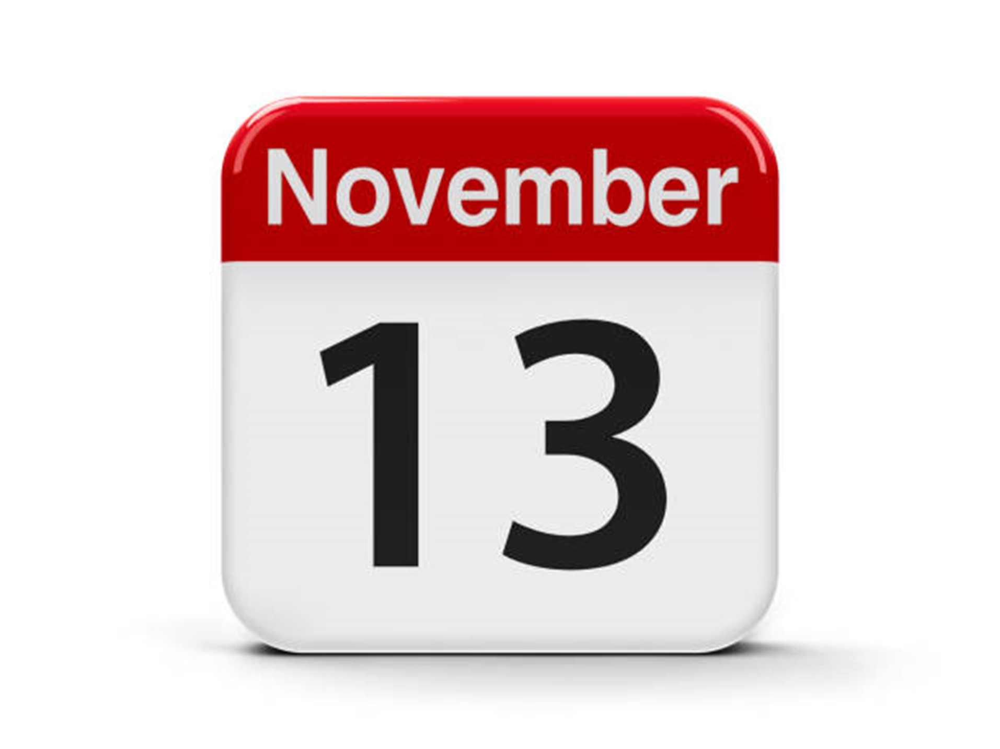

World Kindness Day
The Importance of Kindness

The Importance of Kindness
Kindness Day, observed on November 13th, originated from the World Kindness Movement's 1998 conference in Tokyo, Japan. The conference brought together representatives from global kindness organizations to promote the values of compassion and empathy. The World Kindness Movement, which emerged from this gathering, is dedicated to fostering kindness and encouraging individuals and communities to engage in acts of goodwill. The day aims to highlight the profound impact that simple acts of kindness can have on society and to inspire people to make a positive difference in their communities. By celebrating World Kindness Day, people are reminded of the power of kindness to enhance social connections and improve lives, reinforcing the idea that compassion is a fundamental part of a harmonious society.
To celebrate World Kindness Day, focus on acts of goodwill and generosity. Start by performing simple gestures like complimenting others, offering help, or volunteering. Spread awareness through social media or community events, encouraging others to join. Reflect on the impact of kindness, and make it a regular practice in daily life.">>>Learn More Ways to Celebrate Kindness>>>"

© 2024 Holiday Website Powered by Shawnna Hann. All rights reserved.